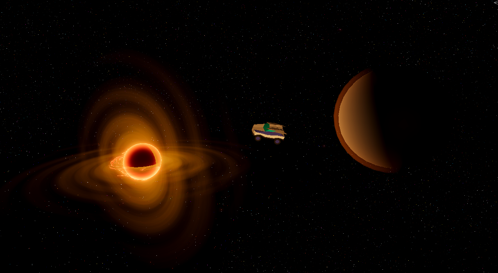

Mes Réalisations
Projet Personnel
Prototype de jeu Unity 6
Avril 2025 - En coursDéveloppement d'un prototype de jeu vidéo personnel sous Unity 6 utilisant C#. Le projet vise à mettre en œuvre et aussi approfondir mes compétences en programmation orientée objet et en game design.
Compétences acquises :
- Programmation en C# dans l'environnement Unity
- Gestion de projet en autonomie
🔗 Prototype en développement (non publié)
Projets Académiques
DÉDALE — Jeu de Labyrinthes
octobre 2025 - novembre 2025Développement d’un jeu de labyrinthes en Java avec interface graphique. Le joueur doit atteindre la sortie dans des labyrinthes générés aléatoirement. Deux modes : Libre (taille et murs personnalisables) et Progression (plusieurs niveaux, scores et sauvegardes).
Compétences acquises :
- Programmation orientée objet en Java (MVC, héritage, composition, polymorphisme)
- Application des principes SOLID
- Gestion d’algorithmes complexes : DFS, BFS, A*
- Conception et justification de diagrammes UML évolutifs
Mini projet Agile
septembre 2025Développement d’un roguelike spatial en Java, conçu en équipe selon une méthodologie Agile. Le jeu repose sur un système tour par tour avec exploration de planètes générées aléatoirement, combats stratégiques, gestion d’inventaire et progression par niveaux.
Compétences acquises :
- Programmation orientée objet en Java
- Conception de systèmes de jeu (combat, inventaire, progression)
- Travail en équipe avec méthodologie Agile / Scrum
- Analyse critique via rétrospectives de sprint
LudoTris - Tetris Éducatif
novembre 2024 - décembre 2024Développement d'un jeu ludo-pédagogique combinant Tetris et quiz éducatif. Deux joueurs s'affrontent sur leurs propres plateaux, avec un système de questions toutes les huit manches offrant bonus ou malus. Développé en IJava avec VSCode, le jeu intègre l'externalisation des données (questions stockées en fichier externe) et un contrôle robuste des saisies utilisateur.
Compétences acquises :
- Algorithmique et structuration modulaire du code
- Programmation orientée objet
- Externalisation et gestion des données
- Travail en binôme et communication d'équipe
Exploration algorithmique
mars 2025 - avril 2025Exploration et implémentation de solutions algorithmiques sur différentes structures de données (tableaux, listes, graphes) avec analyse comparative des performances. Le projet incluait la modélisation de problèmes, l'implémentation en Java POO, l'analyse de complexité algorithmique et la mesure des performances. Tests unitaires réalisés avec JUnit et suivi de version avec Git.
Compétences acquises :
- Analyse de complexité algorithmique
- Structures de données avancées (graphes, listes)
- Tests unitaires avec JUnit
- Rigueur, communication et gestion du temps en binôme
Site web de mobilité durable
novembre 2024Conception d'un site web complet pour promouvoir un service de mobilité interne visant à réduire l'impact carbone. Le projet intègre deux fonctionnalités principales : un système de covoiturage et une location de vélos/trottinettes électriques. Réalisation incluant développement web (HTML/CSS avec VSCode)
Compétences acquises :
- Développement web : HTML5, CSS3,
- Travail d'équipe et coordination de projet
- Flexibilité et adaptation aux imprévus
- Communication et respect des choix collectifs
Jeu en langage C++
avril 2024Premier projet de programmation en C++ réalisé en autodidacte. Développement d'un jeu d'aventure par étapes où le joueur doit franchir différents obstacles tout en gérant ses points de vie pour atteindre une princesse. Ce projet a été l'occasion de découvrir la programmation de manière autonome, sans connaissances préalables du langage.
Compétences acquises :
- Apprentissage autodidacte du C++
- Logique de programmation et structures de contrôle
- Persévérance et résolution de problèmes
- Recherche documentaire et débogage autonome